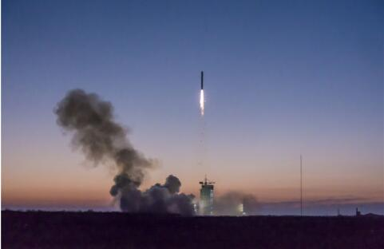
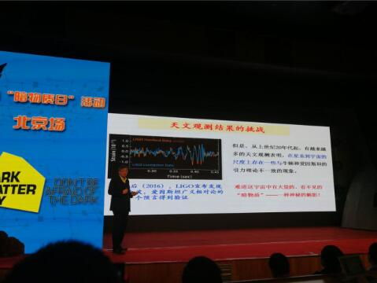
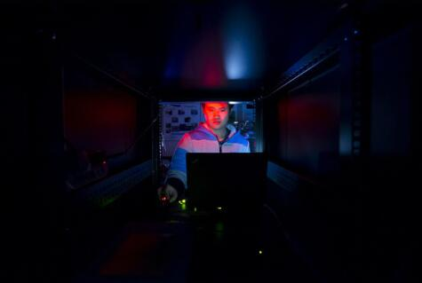

寻找宇宙魅影 中国科学家渴望做出大贡献
新华社北京11月8日电（记者喻菲）“路漫漫其修远兮，吾将上下而求索。”中国科学院院士、粒子物理学家陈和生用2000多年前屈原的这句名言来形容科学家对宇宙本质孜孜不倦的探索，并鼓励中国科学家和青年学子为暗物质的寻找和研究做出重大贡献。
在近日举行的国际“暗物质日”北京站活动上，陈和生院士指出，暗物质和暗能量是本世纪物理学面临的严峻挑战，也意味物理学面临重大突破的历史机遇，需要理论和实验物理学家、天文学家密切合作，共同努力破解世纪谜题。

2015年12月17日暗物质粒子探测卫星“悟空”从酒泉卫星发射中心升空。 新华社记者喻菲摄
陈和生介绍，有越来越多的天文观测表明，在星系到宇宙尺度上存在一些与牛顿和爱因斯坦引力理论不一致的现象。例如：根据牛顿万有引力公式推算出太阳在银河系中的转动速度应为170公里／秒，但实际观测速度是220至250公里／秒。如果牛顿和爱因斯坦的引力理论是正确的话，必然得到这样的结论：银河系周围有大量不可见却能产生引力的神秘物质形成的球状晕。
他说，数十年来，各种各样的天文观测结果都支持暗物质的存在。宇宙微波背景辐射观测实验——威尔金森微波各向异性探测器（WMAP）的观测结果给出了宇宙组份的比例：普通物质占4.9%，暗物质占26.8%，暗能量占68.3%。
寻找宇宙魅影
粒子物理的“标准模型”正确地解释了几乎所有的实验现象，获得了18次诺贝尔物理学奖。“然而暗物质和暗能量的存在使粒子物理学面临最严峻的挑战，标准模型只能解释宇宙中约5%的物质，却对宇宙的95%都一无所知。”陈和生说，“这就如同我们依然在瞎子摸象，或是井底之蛙。”

在中国科技馆举行的“国际暗物质日”活动上陈和生院士在做科普报道。 新华社记者喻菲摄
暗物质和暗能量被科学家比喻为当前物理学天空的“两朵乌云”。目前科学家只知道暗物质没有电磁和强相互作用，有引力相互作用，应当有弱相互作用，应当是在宇宙大爆炸中产生的，但不知道暗物质到底是什么，最流行的理论猜想是一种具有弱相互作用的重粒子（WIMPs）。
陈和生介绍，近30年，寻找暗物质粒子一直是国际粒子物理学界的热点，科学家主要通过三种类型的实验来寻找：第一种是在超高能对撞机，例如欧洲大型强子对撞机（LHC）上产生暗物质候选粒子；第二种是在太空探测暗物质粒子湮灭产生的粒子（如高能光子、正电子、反质子等）的能谱，这类实验包括国际空间站上的阿尔法磁谱仪（AMS）和中国的暗物质粒子探测卫星“悟空”；第三种是直接探测，即测量暗物质粒子与探测器的原子核碰撞产生的信号，由于这样的信号非常微弱，为了屏蔽宇宙射线的干扰，这类实验都在很深的地下开展。
陈和生指出，即便这三种实验中的任何一种发现了暗物质候选粒子，要确认它就是暗物质也是极为艰巨的任务，三种实验或至少两种，必须相互验证，才能确认这种粒子的存在。
他猜想暗物质研究有可能取得突破的方式包括：出现“21世纪的爱因斯坦”指点迷津，提出革命性的物理理论；上天、入地、加速器这三类实验确认超越标准模型的暗物质粒子；更多的天文观测和宇宙学研究给出不同结论。
中国贡献
在暗物质这一国际前沿科学探索中，中国科学家希望能大有作为。
陈和生透露，中国科学家曾对国际空间站上AMS的核心部件——大型磁体的研制作出重要贡献。中科院电工所、高能物理所和中国运载火箭技术研究院在1995至1997年成功设计制造了AMS永磁体系统和主结构，并通过了美国宇航局严格的空间环境模拟测试，于1998年6月成为人类送入宇宙的第一个大型磁体。

中国锦屏地下实验室的清华大学主导的CDEX实验组。 新华社记者沈伯韩摄
此外，中科院高能物理所研究员、粒子天体物理学家毕效军也表示，中国将在新世纪“两暗一黑”（暗物质、暗能量、黑洞）探索中大显身手。例如，在天上有中国的黑洞探测卫星“慧眼”和暗物质卫星“悟空”；而在地下，中国科学家正在四川锦屏2400米的地下实验室开展暗物质直接探测实验。
清华大学副教授、中国锦屏地下实验室物理科学部负责人岳骞说，该实验室为中国暗物质直接探测提供了得天独厚、国际一流的实验环境，推动了中国暗物质直接探测研究从无到有，在国际上实现从“跟跑”到“并跑”。十三五期间，锦屏地下实验室将建成国际最深、空间最大的地下实验室，成为世界暗物质研究“高地”。
陈和生说：“希望中国物理学家能够对暗物质这场革命作出重大贡献，这也是我们中国梦的一部分。”
国际“暗物质日”科普活动由“国际高能物理互联合作组织”发起，美国、英国、加拿大、法国、德国、中国等25个国家和地区于10月31日前后开展了100多场活动。10月28日上海站和11月5日北京站活动由中科院高能物理所、上海交通大学粒子与核物理研究所共同主办。（据新华社客户端报道）